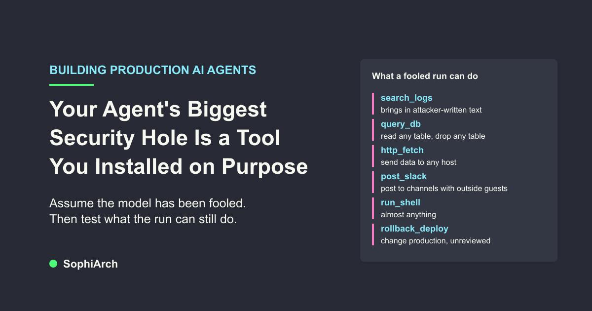

01
Считайте агента уже взломанным и проверяйте, что он может сделать
О чём
Агент читает логи, тикеты и pull request, а значит, и текст атакующего. Автор предлагает не полагаться на то, что модель устоит перед инъекцией: доля успешных косвенных атак меняется от модели к модели и от промпта к промпту. Вместо этого нужно перечислить, что сделает обманутый запуск с каждым инструментом, и урезать права так, чтобы худший вызов ничего не дал.
🔑 Главное
- В исследовании INFUSE (19 моделей, 41 824 запуска) косвенная инъекция в среднем срабатывала в 19,6% случаев, от 3,2% до 41,9% в зависимости от модели. Строить защиту на этом числе автор не советует.
- AI-ревью в GitHub Actions разделено на два job: модель читает diff без прав на запись (contents: read, persist-credentials: false), а комментарий публикует отдельный job с pull-requests: write, где модели нет.
- Инструменты со свободным текстом заменяются типизированными: вместо post_slack(channel, text) вызов с полями сервиса и серьёзности. В Slack выключены unfurl_links и unfurl_media, чтобы ссылка не уносила данные.
- Проверка — canary-тест: модель заменяется скриптом, который делает худшие вызовы взломанного агента, и тест следит, чтобы секрет не ушёл наружу ни как есть, ни в base64, ни в hex.
- Дыра: дежурный агент в статье выдуман, тест дан как набросок, а YAML и код при извлечении потеряли выражения. Рабочая версия лежит в репозитории автора без ссылки в тексте; статья заканчивается рекламой курса SophiArch.
⚡ Попробовать за вечер
- Выпишите инструменты одного своего агента и для каждого ответьте, что он сделает, если модель выполнит команду атакующего. Инструменты, которые пишут наружу свободным текстом, переведите на типизированные аргументы.
- Если AI-ревью работает в GitHub Actions, разнесите его на два job по схеме из статьи: без прав для модели и без модели для записи комментария.
- Метрика: canary-тест со скриптом вместо модели проходит, и секрет не появляется в исходящих запросах ни в одной из трёх кодировок.

из статьи